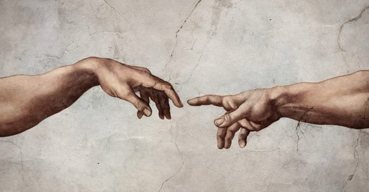
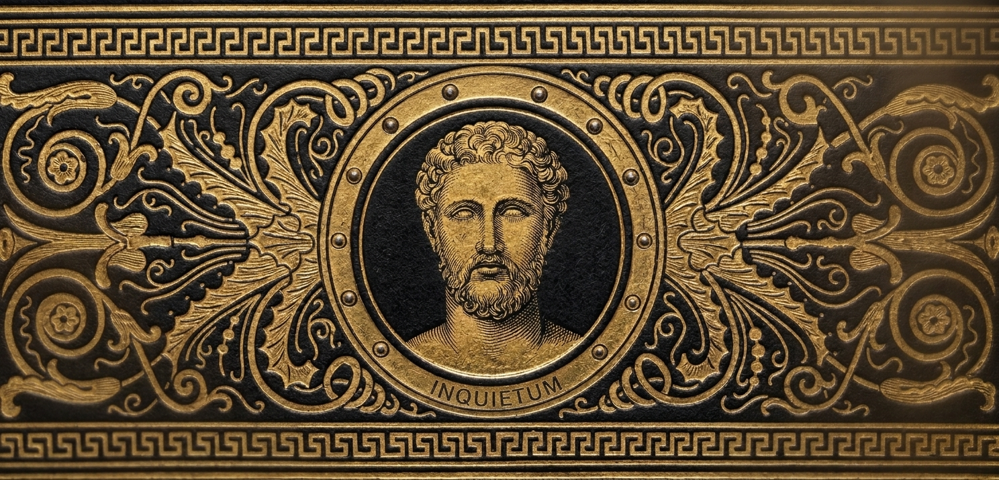

¿Crees que las redes sociales nos acercan o nos están alejando de las personas?
Una pregunta aparentemente sencilla que puede tener muchas respuestas.
PENSAR · CUESTIONAR · COMPARTIR
Un espacio para explorar pensamientos, cuestionar lo que nos rodea y descubrir diferentes maneras de entender el mundo.
Explorar reflexiones
UN LUGAR PARA PENSAR SIN LÍMITESUN ESPACIO PARA PENSAR
Filosofía, sociedad, cultura y muchas otras formas de mirar el mundo.
Cada reflexión es una invitación a detenernos, cuestionar lo que damos por hecho y descubrir nuevas perspectivas.
Explorar todas las reflexiones
UN ESPACIO PARA COMPARTIR
Un lugar para debatir, escuchar otras perspectivas y compartir esas preguntas que no siempre encuentran espacio.
Descubrir InquietumNo todas las preguntas tienen una respuesta correcta. Algunas simplemente necesitan ser compartidas.
Una pregunta aparentemente sencilla que puede tener muchas respuestas.
Podemos mantener el contacto con personas que están lejos, descubrir otras realidades y encontrar comunidades con intereses comunes.
A veces dedicamos tanto tiempo a las pantallas que olvidamos prestar atención a quienes tenemos delante.
No buscamos una única respuesta. Queremos conocer lo que piensas, incluso si es algo que nadie había planteado todavía.
Comparte tu punto de vista →Propón un tema, una duda o una cuestión que te gustaría ver debatida en Mentes Inquietas.
EXPLORA DIFERENTES MIRADAS
QUIÉNES SOMOS
Somos un proyecto independiente nacido de las ganas de pensar, preguntar y mirar la realidad desde distintos puntos de vista.
Conoce nuestro proyectoMENTES INQUIETAS · NUESTRA ESENCIA
No buscamos tener siempre la razón. Buscamos no dejar nunca de pensar.
Porque una mente inquieta nunca deja de explorar.